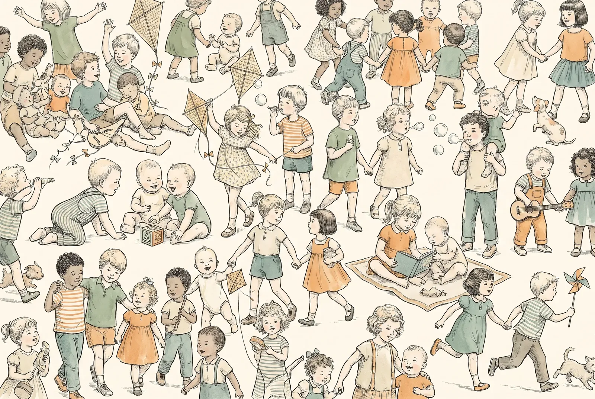

For parents · Guide · English
Summer with children in Turkey: heat, sun, sea and when to worry
Turkey in July and August is hotter than most visiting families expect, and small children handle it far less well than the adults around them. Almost everything that goes wrong on a summer holiday here is preventable — and the few things that are genuinely dangerous are easy to recognise once you know what you are looking for.
Heat: the risk people underestimate
The Aegean and Mediterranean coasts regularly sit at 35–40 °C through July and August; Istanbul is a few degrees cooler but humid, which makes it feel worse. Sea breeze on a beach is deceptive — it removes the sensation of heat while the sun does exactly the same work on your child's skin.
Small children are not small adults in the heat. They carry more skin surface for their body weight, so they take heat on faster; they sweat less efficiently; and most importantly, they do not reliably ask for water or say they feel unwell. A toddler absorbed in the sea will not come out because they are overheating. That job is yours.
- Plan around the sun: beach or pool early morning and late afternoon, indoors or in deep shade roughly 12:00 to 16:00.
- Light, loose, pale cotton clothing and a wide-brimmed hat. A UV swim suit is the single most useful thing to pack.
- Offer fluids on a schedule, not when your child asks.
- Never leave a child in a parked car, not even briefly with a window open. The interior climbs to dangerous temperatures within minutes, and this is how children die in hot countries every summer.
- Prams: a muslin thrown over the hood traps heat and turns the pram into an oven. Use a proper clip-on sunshade with air movement instead.
Heat exhaustion and heatstroke — telling them apart
This is the distinction worth learning before the holiday. One is unpleasant and resolves in the shade; the other is an emergency.
| What you see | What to do | |
|---|---|---|
| Heat exhaustion | Pale, clammy skin · heavy sweating · headache, dizziness · nausea · muscle cramps · unusually tired and irritable · fast, weak pulse | Move into shade or indoors, remove extra clothing, cool the skin with a damp cloth and air movement, give fluids in small sips. Most children improve within 30 minutes. If they do not, seek help. |
| Heatstroke — emergency | Very hot child who becomes confused, unusually drowsy or unresponsive · skin hot, sometimes dry with sweating stopped · repeated vomiting · rapid breathing · seizure | Call 112 immediately. Move to shade, strip to underwear, cool with lukewarm — not ice-cold — water and fan air over the skin while you wait. Do not try to make a drowsy child drink. |
The line between them is how the child is behaving, not the thermometer. A child who has gone quiet, floppy or confused in the heat needs help now, whatever the reading says.
Fluids through the day
- Water is right for most of the day. Offer it every 20–30 minutes during active play in the heat, whether or not it is asked for.
- Breastfed babies under 6 months need more frequent feeds, not water.
- Watch the nappies and the toilet trips: much less urine, or urine that has gone dark, is your earliest warning.
- If your child is also losing fluid through diarrhoea or vomiting, plain water is not enough — see our guide to diarrhoea and vomiting in Turkey for oral rehydration solution and which water to use here.
- Skip fizzy drinks and very sugary juices as the main fluid on a hot day.

Sun and sunburn
A sunburn is a burn. In a small child it can mean pain, blistering, fever and a ruined week, and childhood sunburns carry consequences decades later.
- Factor 50, broad spectrum, for children. Apply generously about 20 minutes before going out.
- Reapply every two hours, and after every swim or towel-dry — "water resistant" means it survives a while, not a day.
- The places everyone misses: ears, the tops of feet, the back of the neck, the scalp parting, and under the edges of swimwear straps.
- Babies under 6 months should be kept out of direct sun altogether. Shade, a wide hat and light long sleeves, rather than relying on cream. Where a small area cannot be covered, a little sunscreen is reasonable.
- Sun reflects off water and pale sand — shade under a parasol is not full protection.
Sun cream is sold in every pharmacy (eczane) and in supermarkets here; at the counter, ask for "çocuklar için güneş kremi, faktör 50".
If your child does get burnt
Move out of the sun for the rest of the day, cool the skin with a cool shower or damp cloths, give plenty of fluids, and use an unperfumed after-sun or moisturiser. Paracetamol at the dose your doctor gave you helps the pain — see the fever guide for what it is called in Turkish pharmacies. See a doctor if there is blistering, if the burn covers a large area, if your child has a fever or is unwell, or if the child is under one year old.
The sea: sea urchins and jellyfish
Two things bring holiday families to a Turkish clinic more than anything else.
Sea urchins (deniz kestanesi)
Very common on the rocky Aegean and Mediterranean shores — the classic injury is a child stepping off rocks into shallow water.
Get the child out and look at the foot. Remove spines that are clearly visible and lift out easily; do not dig into the skin. Soak the area in water as hot as the child comfortably tolerates for 30–60 minutes, which genuinely helps the pain.
See a doctor if spines remain under the skin, the wound is deep, near a joint, or on the sole where they must walk, if there are many spines, or if redness, swelling, warmth or fever appear over the next days. Tetanus status should be checked.
Water shoes prevent almost all of this. Buy them on day one.
Jellyfish (denizanası)
Numbers vary hugely by year and by wind. Stings are painful but almost always settle.
Get the child out and keep them calm. Rinse with seawater, not fresh water — fresh water can make remaining stinging cells fire. Lift tentacle pieces off with tweezers or the edge of a card, never bare hands, and do not rub with sand or a towel. Immersing the area in comfortably hot water (around 40–45 °C) for 20–40 minutes eases the pain.
Do not reach for vinegar unless a doctor advises it — it helps for some species and makes others worse.
Emergency (112) if there is widespread rash, swelling of the face or lips, or any difficulty breathing; see a doctor for stings on the face or over a large area.
Swimmer's ear, and what the pool passes around
After several days in the sea or pool, ear pain is one of the commonest complaints of the holiday. Swimmer's ear is an infection of the ear canal: the giveaway is that it hurts when you tug the outer ear or press the little flap in front of it, often with itching or discharge.
- Dry the ears gently after swimming — tilt the head, let water run out. Never put cotton buds into the ear canal.
- See a doctor for the pain, discharge or hearing change; it needs treating and does not reliably settle on its own.
- Pools also pass around stomach bugs, which is worth knowing if more than one child in the group goes down — see the diarrhoea and vomiting guide.
- A day or two of a red, sticky eye after heavy pool use is common; if it does not settle or the eye is painful or light-sensitive, have it looked at.
Water safety — the quiet one
Not a medical problem so much as the reason for most of them. Drowning in children is fast and almost silent — no splashing, no shouting, often less than a minute, and frequently within a few metres of adults who are present but not watching.
- For under-fives and any non-swimmer, supervision means within arm's reach, eyes on the water, phone down.
- In a group, name one adult as the watcher for a set period and hand over explicitly. "Everyone is watching" means nobody is.
- Armbands and inflatable rings are toys, not safety equipment. A properly fitted buoyancy vest is not the same thing as a float.
- Villa and rental pools frequently have no fence and no lifeguard. Check the pool area on arrival, before your child does.
- Any child who was submerged and then coughed persistently, seemed breathless or was very drowsy afterwards should be assessed the same day, even if they seem fine.
Mosquitoes and other bites
Mosquitoes are a nuisance along the coast and around still water, worst at dusk and dawn. They are not a serious disease risk for travellers in Turkey, but a scratched, infected bite can spoil a week.
- Repellents with 10–30% DEET are considered suitable from 2 months of age, applied by an adult: onto your own hands first, then onto exposed skin — avoiding the hands (they go in mouths), the mouth and the eyes. Wash it off at the end of the day.
- Under 2 months: no repellent. Use a pram net, light long sleeves, and rooms with screens or air conditioning.
- Avoid combined sunscreen-and-repellent products: sunscreen must be reapplied often, repellent should not be.
- Keep nails short and treat the itch, because the real problem is scratching. A bite that grows increasingly red, warm, swollen and painful over a day or two may be infected and should be seen.
- Get medical advice for any bite or sting followed by widespread rash, swelling of the face or lips, or breathing difficulty — that is an emergency.
What to have with you — and its Turkish name
All of this is available over the counter at any Turkish pharmacy (eczane), so there is no need to carry a suitcase of supplies:
| What you want | Ask for (Turkish) |
|---|---|
| Children's sunscreen, factor 50 | Çocuklar için güneş kremi, faktör 50 |
| After-sun / soothing cream | Güneş sonrası bakım kremi |
| Oral rehydration salts | Oral rehidratasyon sıvısı (ORS) |
| Paracetamol syrup for children | Çocuk parasetamol şurubu (Calpol, Parol, Tylol) |
| Digital thermometer | Dijital derece / termometre |
| Insect repellent suitable for a child | Çocuk için uygun sivrisinek kovucu |
| Saline (for rinsing eyes, nose, grazes) | Serum fizyolojik |
| Plasters and antiseptic | Yara bandı ve antiseptik |
| Tweezers | Cımbız |
Doses of anything medicinal follow your child's weight, not their age — use the dose your own doctor gave you, and tell the pharmacist your child's age and weight.
Call 112 or go to the emergency department if
- A very hot child becomes confused, floppy, hard to wake or unresponsive — suspected heatstroke.
- A seizure, at any temperature.
- Any difficulty breathing, or swelling of the face or lips after a sting or bite.
- A child who was submerged and is coughing persistently, breathless or drowsy afterwards.
- Repeated vomiting in the heat, or a child who cannot keep fluids down.
- No urine for many hours, no tears when crying, sunken eyes.
- Extensive sunburn with blistering or fever, or any significant burn in a baby.
- A wound that becomes increasingly red, hot and painful, with fever.
Where to go on the coast
The system works the same way everywhere in Turkey: emergency departments (acil servis) are open 24 hours at state and private hospitals, no appointment needed, and care is not refused on grounds of nationality or insurance status. The emergency number is 112. Pharmacies take turns staying open overnight — the one on duty is the nöbetçi eczane, and every closed pharmacy posts tonight's address in its window.
In the main holiday regions you will also find private clinics and hospitals used to treating foreign patients, where English is usually available; many will deal directly with travel insurers. Keep your policy number and your insurer's emergency line on your phone — that is the thing people cannot find when they need it. Our guide to fever at night in Turkey sets out the whole system in detail, including what to bring with you.
Turkish phrases for the beach, the pharmacy and the clinic
| Turkish | English |
|---|---|
| Çocuğum deniz kestanesine bastı. | My child stepped on a sea urchin. |
| Denizanası soktu. | A jellyfish stung him/her. |
| Güneş çarpmış olabilir. | It may be heatstroke. |
| Çok sıcakladı, halsiz ve uykulu. | He/she overheated — listless and drowsy. |
| Güneş yanığı var, kabardı. | There is sunburn and it has blistered. |
| Kulağı ağrıyor, denize giriyordu. | His/her ear hurts — they have been swimming. |
| Sivrisinek ısırdı, çok şişti. | A mosquito bit them and it swelled a lot. |
| Su yuttu, öksürüyor. | He/she swallowed water and is coughing. |
| Kaç yaşında ve kaç kilo, söyleyeyim. | Let me tell you their age and weight. |
| En yakın hastane / nöbetçi eczane nerede? | Where is the nearest hospital / duty pharmacy? |
| İngilizce bilen biri var mı? | Is there someone who speaks English? |